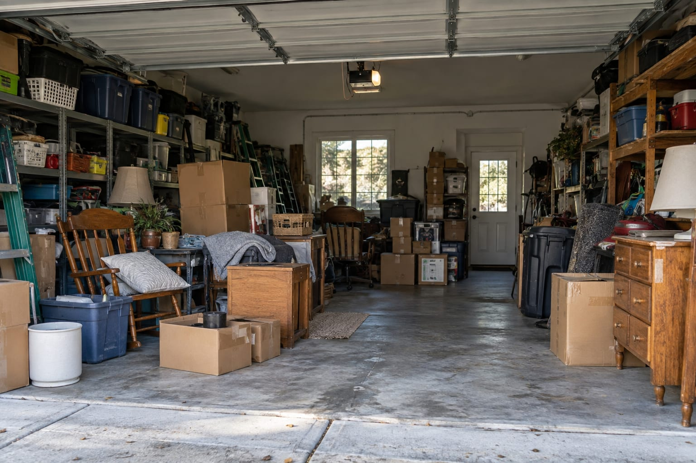

Everyday clutter
Boxes, unwanted household items, and the things that have been taking up room. Start with photos of what needs to go.
Household junk removal
Junk removal · Salt Lake City to Provo
One and Done Removal helps you take the next step toward clearing unwanted items. Send us photos of what needs to go, your location, and the timing you have in mind.
One Call. One Load. One and Done.
What needs to go?
Every removal starts with your space and your needs. Tell us what you’re working with.
Boxes, unwanted household items, and the things that have been taking up room. Start with photos of what needs to go.
Household junk removalHave a couch, table, or other large item in mind? Share the dimensions and access details when you ask about removal.
Furniture removal inquiriesReady to make room again? Show us the space, what you want to keep, and the items you want cleared out.
Garage cleanout detailsPlease confirm item acceptance and access requirements before scheduling.
Keep it simple
Share photos, your location, and a few details about the items and how we can reach them.
Confirm the scope, price, and availability before making arrangements.
Set aside the things you’re keeping and prepare access for your agreed pickup.
Our service area
One and Done Removal serves the Salt Lake City–Provo corridor. Send your city or ZIP code with your inquiry so we can confirm your location.
Salt Lake City–Provo service areaA few things to know
A little preparation makes it easier to discuss your removal.
Talk about your jobOur service corridor runs from Salt Lake City to Provo, Utah. Share your city or ZIP code when you get in touch so we can confirm coverage for your address.
Send clear photos of the items, your city or ZIP code, where the items are located, and your preferred timing. Mention stairs, narrow doorways, or other access details so the job can be discussed accurately.
Photos help show the size and type of a removal job. Include the whole pile and any bulky pieces, and ask what is included in the quote before confirming a pickup.
Ask about access when arranging your removal. Explain whether the items are in a garage, basement, upstairs room, or outside. Keep anything you want to save clearly separated.
Item acceptance needs to be confirmed before scheduling. Tell us about appliances, batteries, paint, chemicals, or unusually heavy materials so we can discuss whether the job is a fit.
Read customer feedback or share your experience with One and Done Removal.
About our Google reviewsGoogle review links are being added. These buttons will be available once our business profile is connected.
Send your location and photos to discuss a removal quote.